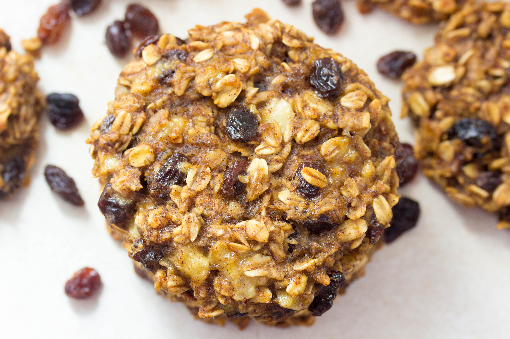

Banana Oatmeal Raisin Cookies
Source: “3 Ingredient Oatmeal Raisin Cookies” from adamantkitchen.com
Yield: ½ dozen cookies
Ingredients
- ½ cup rolled oats, quick cooking type
- 1 banana, very ripe
- ¼ cup raisins
Instructions
- Preheat oven to 350F.
- Mash bananas with a fork until smooth.
- Add rolled oats and raisins.
- Scoop heaping tablespoons of dough onto a cookie sheet.
- Bake for 18-20 minutes until lightly browned. Cool completely before eating.